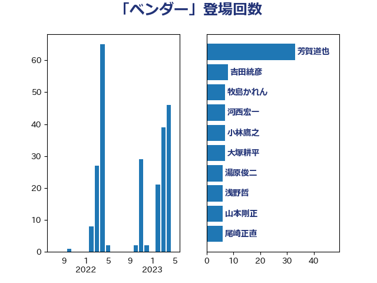

単語「ベンダー」

| 芳賀道也 | 国民民主党 | 33 回 |
| 吉田統彦 | 立憲民主党 | 8 回 |
| 牧島かれん | 自由民主党 | 7 回 |
| 河西宏一 | 公明党 | 7 回 |
| 小林鷹之 | 自由民主党 | 7 回 |
| 大塚耕平 | 国民民主党 | 7 回 |
| 湯原俊二 | 立憲民主党 | 6 回 |
| 浅野哲 | 国民民主党 | 6 回 |
| 山本剛正 | 日本維新の会 | 6 回 |
| 尾崎正直 | 自由民主党 | 6 回 |
| 金子恭之 | 自由民主党 | 4 回 |
| 河野太郎 | 自由民主党 | 4 回 |
| 平林晃 | 公明党 | 4 回 |
| 塩崎彰久 | 自由民主党 | 4 回 |
| 阿部司 | 日本維新の会 | 3 回 |
| 緑川貴士 | 立憲民主党 | 3 回 |
| 福重隆浩 | 公明党 | 3 回 |
| 本田顕子 | 自由民主党 | 3 回 |
| 大串正樹 | 自由民主党 | 3 回 |
| 仁木博文 | 無所属 | 3 回 |
| 道下大樹 | 立憲民主党 | 2 回 |
| 若松謙維 | 公明党 | 2 回 |
| 福島伸享 | 無所属 | 2 回 |
| 神谷政幸 | 自由民主党 | 2 回 |
| 片山大介 | 日本維新の会 | 2 回 |
| 梅村聡 | 日本維新の会 | 2 回 |
| 松本剛明 | 自由民主党 | 2 回 |
| 宮本岳志 | 日本共産党 | 2 回 |
| 奥野総一郎 | 立憲民主党 | 2 回 |
| 中川宏昌 | 公明党 | 2 回 |
| 三浦信祐 | 公明党 | 2 回 |
| 高市早苗 | 自由民主党 | 1 回 |
| 西田実仁 | 公明党 | 1 回 |
| 藤井比早之 | 自由民主党 | 1 回 |
| 自見はなこ | 自由民主党 | 1 回 |
| 竹詰仁 | 国民民主党 | 1 回 |
| 福田昭夫 | 立憲民主党 | 1 回 |
| 石田昌宏 | 自由民主党 | 1 回 |
| 田村まみ | 国民民主党 | 1 回 |
| 片山さつき | 自由民主党 | 1 回 |
| 浜田靖一 | 自由民主党 | 1 回 |
| 柘植芳文 | 自由民主党 | 1 回 |
| 斎藤アレックス | 国民民主党 | 1 回 |
| 島村大 | 自由民主党 | 1 回 |
| 大島敦 | 立憲民主党 | 1 回 |
| 加藤勝信 | 自由民主党 | 1 回 |
| 伊藤孝恵 | 国民民主党 | 1 回 |
| 伊波洋一 | 無所属 | 1 回 |
| 中司宏 | 日本維新の会 | 1 回 |